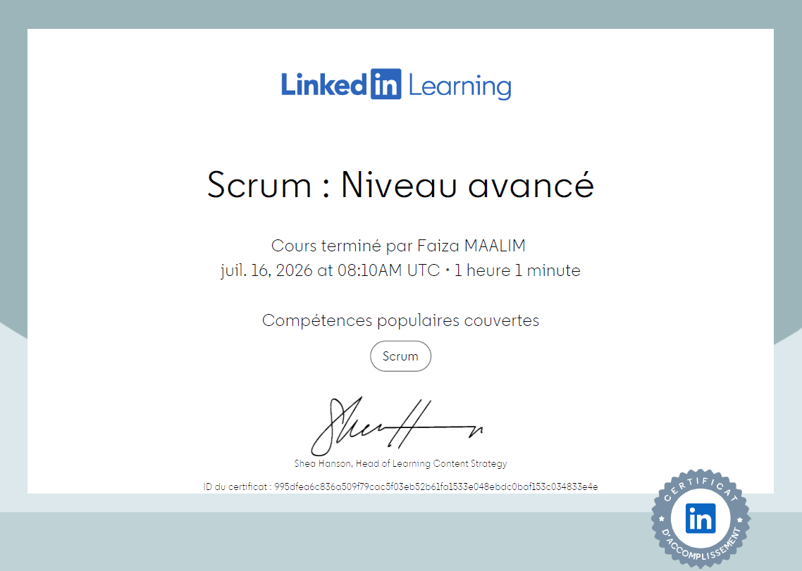
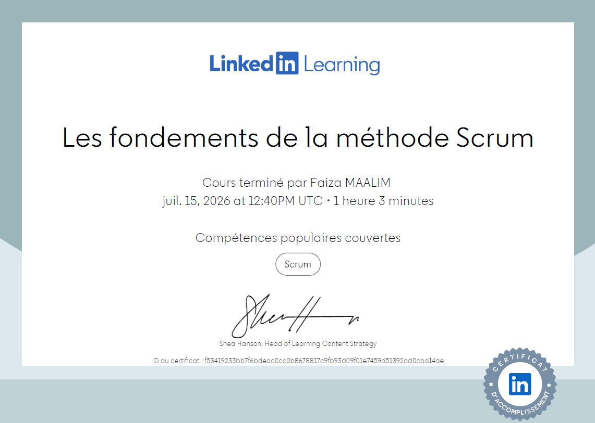
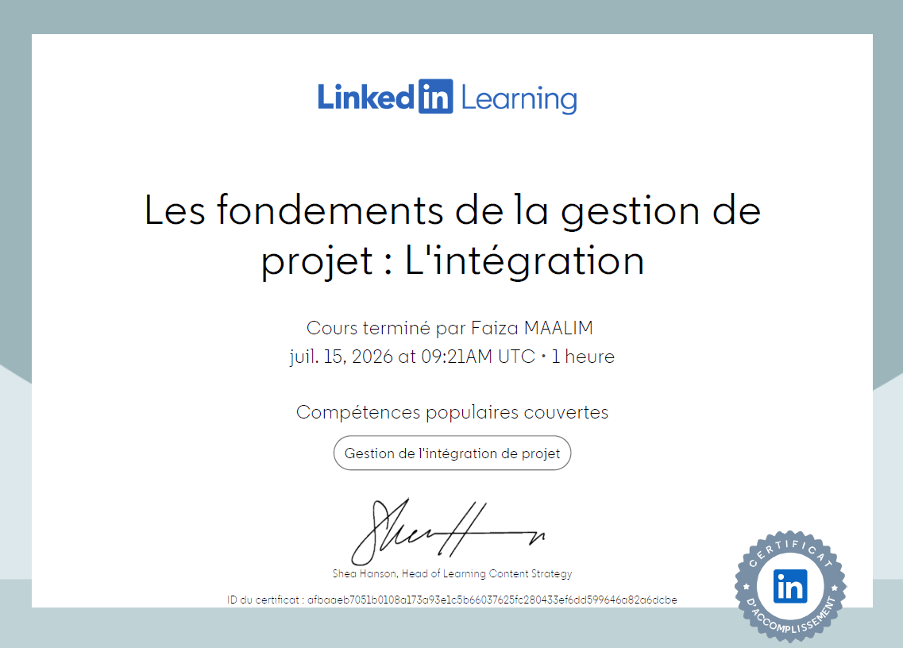
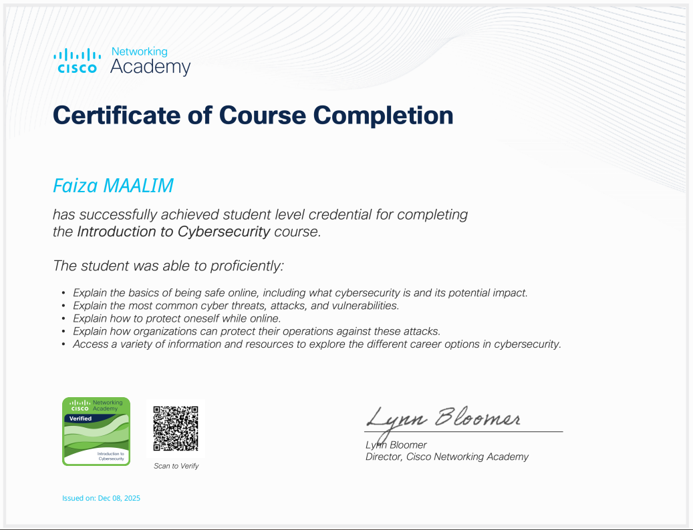
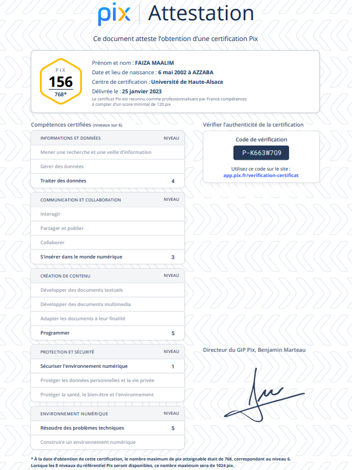
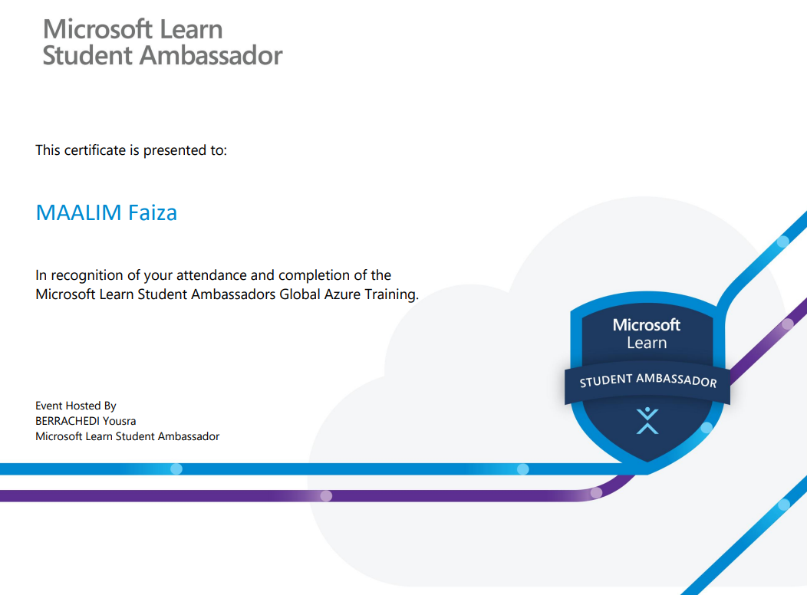

Certifications

Scrum : Niveau avancé
Project Management Institute – 2026

Les fondements de la méthode Scrum
Project Management Institute – 2026

Les fondements de la gestion de projet
Project Management Institute – 2026

Introduction à la Cybersécurité
Cisco Networking Academy – 2025

Introduction à l'IA pour les entreprises
Veolia Academy – 2025

Formation Prévention et Secours Civiques
Centre Français du Secourisme – 2023

PIX
Université de Haute-Alsace – 2023

Microsoft Azure Fundamentals
Microsoft – 2022

Fondamentaux du Marketing Numérique
Google – 2021